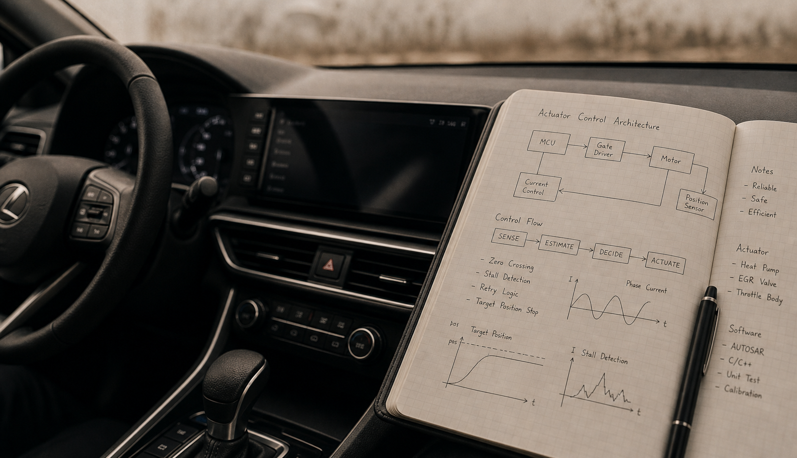

01
실무 기록
센서형 히트펌프 액추에이터 제어
PMSM 모터와 기어를 통해 냉매 유로를 움직이는 액추에이터를 제어했습니다. 목표 위치 정지, STALL 감지, 재시도 로직처럼 실제 동작 안정성에 직접 닿는 판단을 맡았습니다.
Automotive embedded software archive
자동차는 여러 제어기가 동시에 움직이는 시스템입니다. 그 안에서 모터 제어, 바디 제어기, 기능안전, AUTOSAR 툴링처럼 반복해서 다뤄온 주제를 중심으로 기록을 남깁니다.
무엇을 잘한다는 문장보다, 어떤 문제를 오래 다뤄왔는지와 어떤 기준이 남았는지가 먼저 보이길 바랐습니다. 이 사이트는 그 흐름을 한 번에 훑어볼 수 있도록 정리한 작은 아카이브입니다.
Kim Suyoung

Selected work
실무와 개인 작업을 한데 놓고, 지금의 관심사와 작업 방식이 이어지는 지점을 먼저 보여주도록 구성했습니다.
01
실무 기록
PMSM 모터와 기어를 통해 냉매 유로를 움직이는 액추에이터를 제어했습니다. 목표 위치 정지, STALL 감지, 재시도 로직처럼 실제 동작 안정성에 직접 닿는 판단을 맡았습니다.
02
실무 기록
조향 컬럼 모듈의 기능 개발과 양산 대응을 함께 다루면서, 사용감과 제어 구조, 통신 안정성이 실제 제품 안에서 어떻게 맞물리는지 정리해왔습니다.
03
개인 작업
추천과 실행, 운영 로그와 readiness 체크를 분리해 작은 운용 도구처럼 정리했습니다. 반복 관찰과 상태 확인을 어떻게 줄일 수 있는지 실험한 개인 작업입니다.

Archive
회사명보다 시스템과 문제의 유형을 먼저 두고 묶었습니다.
현재 보기: 실무 기록
정확한 위치 제어와 구동 안정성을 위해 반복해서 다뤄온 제어 흐름입니다.
2024
목표 위치 정지, STALL 감지, 재시도 로직까지 포함한 액추에이터 제어를 담당했습니다.
2024
상전환, zero crossing 감지, sensorless 제어 판단을 직접 구현한 선행 과제입니다.
사용감, 통신, 양산 대응이 함께 묶여 움직이는 바디 시스템을 다뤄왔습니다.
2023
조향 컬럼 모듈의 easy-exit, 메모리 복원, 통신 대응을 포함해 양산 관점에서 다뤘습니다.
2022
진단, fail-safe, 안전 요구사항과 구현이 같은 흐름으로 읽히도록 문서와 코드를 함께 정리했습니다.
2022
여러 기능과 액추에이터 상태를 하나의 제어 구조 안에서 어떻게 분리하고 연결할지 검토했습니다.
반복되는 설정과 검증을 자동화 가능한 흐름으로 다시 묶는 작업입니다.
2026
ARXML 파싱부터 Python 코드 생성, WSL/GCC 검증까지 이어지는 자동화 흐름을 만들고 있습니다.
반복 확인과 판단을 줄이기 위해 작은 운용 도구처럼 정리한 작업입니다.
2025
추천 엔진, 실행 엔진, readiness 체크, 운영 로그를 분리해 상태 확인 부담을 줄이는 방향으로 구성했습니다.
2024
특정 키워드 매물을 모아 보고 시세와 후보를 정리할 수 있게 만든 추적 앱입니다.
학습과 검증을 위해 직접 구성한 작은 시스템들입니다.
2024
레지스터 상태와 보드 반응을 함께 볼 수 있도록 만든 웹 시뮬레이션 학습 환경입니다.
2024
상태, 실행, 로그 확인을 한 곳에서 보도록 만든 간단한 원격 운영 인터페이스입니다.
Notes
현장에서 반복해 마주한 예외와 정지 조건, 복구 흐름은 다음 설계의 기준이 되도록 정리해두려 합니다.
기능안전, 진단, 테스트 자동화는 구현만으로 끝나지 않았고, 설명 가능한 구조로 남는지가 늘 중요했습니다.
개인 작업에서도 운영 화면과 자동화 흐름을 나눠, 사람이 계속 보지 않아도 되는 구조를 만드는 데 관심이 있습니다.